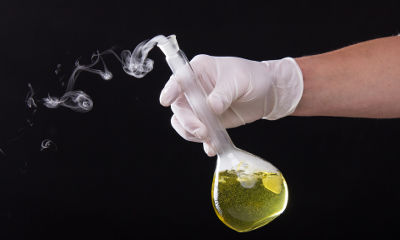
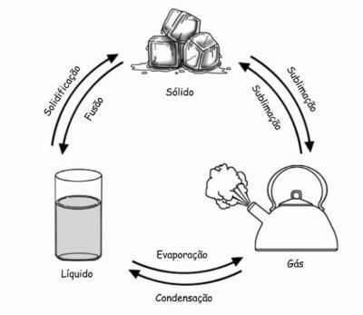

Fenômeno é o nome dado a toda e qualquer transformação que a matéria (tudo aquilo que ocupa lugar no espaço e possui massa) pode sofrer, independentemente se a sua composição foi ou não alterada.
Quando pegamos uma folha de papel e simplesmente a rasgamos, modificamos seu formato e tamanho, mas ainda temos o papel. Porém, se essa folha for queimada, teremos modificação na sua composição.
O exemplo do papel representa os dois tipos de fenômenos que a matéria pode sofrer. Vamos entendê-los melhor!
São alterações sofridas pela matéria que não provocam nenhuma modificação na sua composição (substâncias que formam o material), ou seja, antes, durante e após a ocorrência de um fenômeno físico, as substâncias que constituem a matéria serão exatamente as mesmas.
Cortar papel é um exemplo de fenômeno físico
Exemplos de fenômenos físicos:
• Produção do suco de tomate
• Produção da gasolina a partir do petróleo
• Condução da corrente elétrica em um fio de cobre
• Decomposição da luz solar em um prisma
• Precipitação da chuva
• Dissolução do chocolate em pó no leite
• Sublimação do gelo seco
Sinais que caracterizam um fenômeno físico:
• Mudança de estado físico
• Mudança no formato ou no tamanho
• Solubilidade (quando uma matéria se dissolve em outra)
• Condução de calor ou eletricidade
São alterações sofridas pela matéria que provocam modificação na sua composição, ou seja, as substâncias que formam a matéria antes da ocorrência de um fenômeno químico são diferentes das substâncias que compõem a matéria após o fenômeno.

A produção de fumaça é um indicativo de fenômeno químico
Exemplos de fenômenos químicos
• Produção de etanol a partir da cana-de-açúcar
• Produção de vinho a partir do suco de uva
• Transformação do vinho em vinagre
• Apodrecimento de frutas
• Amadurecimento de frutas
• Cozimento de ovo
• Formação da ferrugem em um portão de aço
• Comprimido efervescente adicionado à água
Sinais que identificam um fenômeno químico
• Mudança de cor
• Efervescência (desenvolvimento de bolhas em um líquido)
• Liberação de energia na forma de calor ou luz
• Formação de um sólido
• Produção de fumaça
Estado Sólido
No estado sólido as moléculas que compõem a matéria permanecem fortemente unidas e possuem forma própria e volume constante, por exemplo, o tronco de uma árvore ou o gelo (água em estado sólido).
Estado Líquido
No estado líquido, as moléculas já apresentam uma menor união e maior agitação, de forma que apresentam forma variável e volume constante, por exemplo, a água em determinado recipiente.
Estado Gasoso
Já no estado gasoso, as partículas que formam a matéria apresentam intensa movimentação, pois as forças de coesão são pouco intensas nesse estado. Neste estado, a substância apresenta forma e volume variáveis.
Sendo assim, no estado gasoso, a matéria terá forma segundo o recipiente que se encontra, caso contrário ela permanecerá disforme, tal qual o ar que respiramos e não vemos.
Para exemplificar, podemos pensar no botijão de gás, o qual apresenta gás comprimido que adquiriu determinada forma.
As mudanças de estado físico dependem basicamente da quantidade de energia recebida ou perdida pela substância. Existem essencialmente cinco processos de mudanças de estado físico:
Fusão: passagem do estado sólido para o estado líquido por meio do aquecimento. Por exemplo, um cubo de gelo que fora do congelador vai derretendo e se transformando em água.
Vaporização: passagem do estado líquido para o estado gasoso que é obtido de três maneiras: calefação (aquecedor), ebulição (água fervendo) e evaporação (roupas secando no varal).
Liquefação ou Condensação: passagem do estado gasoso para o estado líquido por meio do resfriamento, por exemplo, a formação do orvalho.
Solidificação: passagem do estado líquido para o estado sólido, ou seja, é o processo inverso à fusão, que ocorre por meio do arrefecimento, por exemplo, água líquida transformada em gelo.
Sublimação: passagem do estado sólido para o estado gasoso e vice-versa (sem passagem pelo estado líquido) e pode ocorrer pelo aquecimento ou arrefecimento da matéria, por exemplo, gelo seco (dióxido de carbono solidificado).
